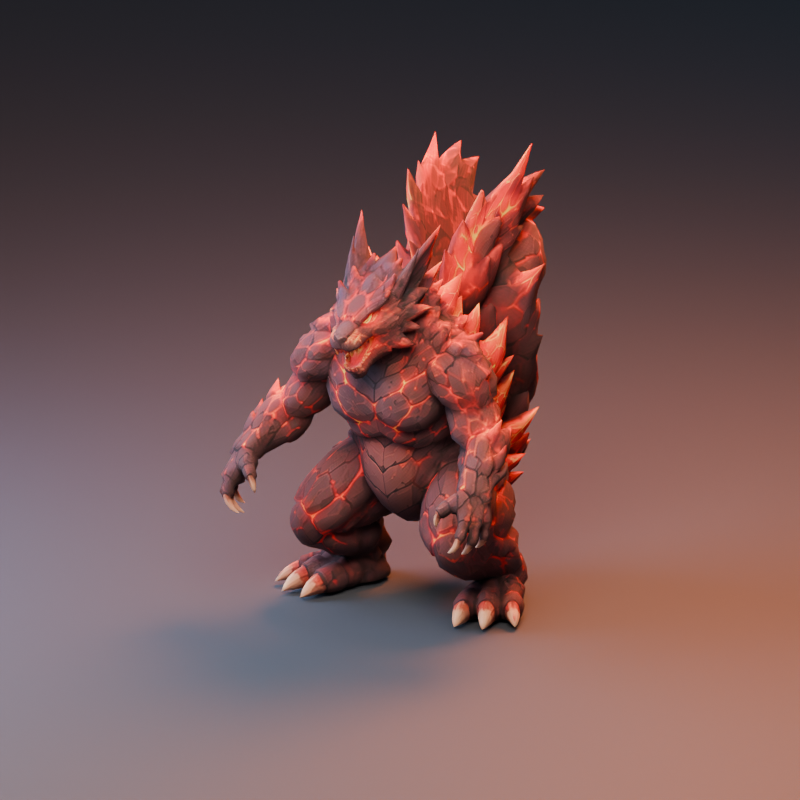

질량감
움직이기 전의 준비, 몸통에서 이어지는 힘, 늦게 따라오는 꼬리로 거대함을 표현합니다.
FROM PROMPT TO PERFORMANCE · 2026
용암 호수에서 솟아오르는 괴수, 스쿼질라.
하나의 모델에 뼈대를 세우고, 의도를 동작으로 옮긴 기록.

SQUIRZILLA / LAVA & ROCK CREATURE무게감 있는 몸짓.
일관된 자세와 자연스러운 연결.
01 / DIRECTION
화산의 바위와 용암으로 이루어진 초거대 보스.
크기는 외형뿐 아니라 동작의 준비와 여운에서도 드러납니다.
“제공된 용암·바위 괴수 모델을 기반으로 리깅하고, 초거대 괴수의 질량감이 느껴지는 동작을 만든다. 고개를 살짝 숙이고 입을 조금 연 Idle을 기준으로 공격, 포효, 회전, 빔, 잠수와 등장을 연결한다.”
움직이기 전의 준비, 몸통에서 이어지는 힘, 늦게 따라오는 꼬리로 거대함을 표현합니다.
공통 Idle을 중심에 두고, 잠수와 수영·등장을 하나의 흐름으로 연결합니다.
무릎까지 잠기는 용암 수면과 호숫가의 높이를 동작과 최종 자세에 반영합니다.
02 / RIG & WORKFLOW
제공 모델의 형상과 텍스처를 바탕으로
몸의 움직임을 제어하고 동작별 Action으로 정리했습니다.
용암·바위 괴수 모델과 원본 UV·텍스처를 작업의 기준으로 설정.
30개 뼈와 발 IK. 고정 루트 아래에서 몸통, 팔다리, 머리와 꼬리의 움직임을 제어.
Idle을 기준으로 12개 Action 제작. 공격의 준비와 회복, 포효의 여운, 잠수 상태의 전환을 연결.
모델과 모션을 개별 FBX로 분리하고 프레임별로 베이크. 아래 영상은 Blender에서 렌더한 모션 프리뷰.
03 / MOTION LIBRARY
빔·수면·접촉용 배경은 동작을 설명하기 위한 프리뷰입니다. 프롬프트는 대화의 최종 제작 의도를 정리한 문장이며, 원문 인용이 아닙니다.
ONE CHARACTER. TWELVE PERFORMANCES.
Idle → Attack / Roar / Beam → Idle
Idle → Dive → Swim → Emerge → Idle